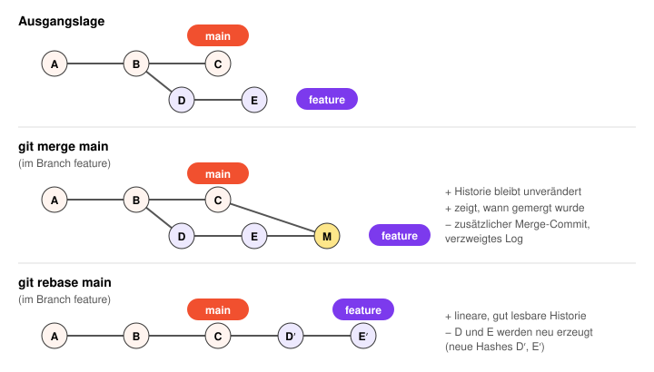
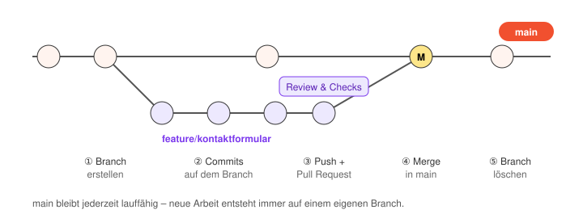

Lektion 2.2 — Teil 2: Branches & Zusammenarbeit
Rebase, Feature-Branches & Pull Requests
Lernziele
- Erklären, was
git rebasemit den Commits eines Branches macht - Merge und Rebase mit ihren Vor- und Nachteilen gegenüberstellen
- Die goldene Regel des Rebase begründen und
--force-with-leaserichtig einsetzen - Mit
git pull --rebaseunnötige Merge-Commits vermeiden - Den Feature-Branch-Workflow (GitHub Flow) beschreiben und anwenden
- Den Zweck eines Pull Requests erklären
1 — Das Problem: der Feature-Branch veraltet
Du arbeitest seit zwei Tagen auf feature/kontakt. In der Zwischenzeit haben Kolleginnen
mehrere Änderungen in main gemergt. Dein Branch basiert also auf einem alten Stand. Bevor du
deine Arbeit abgibst, solltest du die neuen Commits von main übernehmen — damit du siehst, ob
dein Code mit dem aktuellen Stand zusammenpasst, und mögliche Konflikte auf deinem Branch
löst statt auf main.
Dafür gibt es zwei Wege:
git switch feature/kontakt
git merge maingit switch feature/kontakt
git rebase mainBeide führen zum selben Inhalt der Dateien, aber zu einer unterschiedlichen Historie.
2 — Was macht git rebase?
Rebase heißt „neu aufsetzen“: Git nimmt die Commits deines Branches, die noch nicht in
main sind, legt sie kurz beiseite, setzt den Branch auf den neuesten Commit von main und
spielt deine Commits dann einzeln, der Reihe nach, neu ab. Es sieht danach so aus,
als hättest du erst heute vom aktuellen main abgezweigt.

git switch feature/kontakt
git rebase main
# Successfully rebased and updated refs/heads/feature/kontakt.
git log --oneline --graph --all
# * 0c3a524 (HEAD -> feature/kontakt) Kontaktformular gestylt
# * 91be2d0 Kontaktformular ergänzt
# * 562e58c (main) README ergänzt
# * b15a50e Jahr im Footer aktualisiertD′ und E′ haben denselben Inhalt und dieselben Messages wie D und E, sind aber neue Commits mit neuen Hashes, weil sich ihr Vorgänger geändert hat (der Hash hängt auch vom Vorgänger ab, siehe Lektion 1.1). Die alten Commits D und E existieren danach in keinem Branch mehr.
Haben deine Commits und die neuen Commits auf main dieselben Zeilen geändert, hält der Rebase
beim betroffenen Commit an und meldet einen Konflikt. Du löst ihn wie beim Merge (Datei
bearbeiten, git add), setzt dann aber mit git rebase --continue fort statt mit git commit.
Mit git rebase --abort brichst du ab und alles ist wie vorher. Lektion 2.3 zeigt beides an einem
Beispiel.
3 — Merge oder Rebase?
| Merge | Rebase | |
|---|---|---|
| Historie | bleibt exakt erhalten, verzweigt | wird umgeschrieben, linear |
| Zusätzlicher Commit | ja, ein Merge-Commit | nein |
| Hashes | bestehende Commits bleiben unverändert | die eigenen Commits bekommen neue Hashes |
| Konflikte | einmal, für alle Änderungen gemeinsam | evtl. mehrmals, einmal pro betroffenem Commit |
| Lesbarkeit des Logs | bei vielen Branches unübersichtlich | übersichtlich wie eine Liste |
| Risiko | gering, nichts geht verloren | gefährlich bei Commits, die andere schon haben |
In der Praxis kombinieren viele Teams beides:
- Eigenen, noch nicht geteilten Feature-Branch aktualisieren: Rebase auf
main— die Historie bleibt sauber. - Fertigen Feature-Branch in main übernehmen: Merge (meist über einen Pull Request auf GitHub).
- Gemeinsam genutzte Branches wie
main: niemals rebasen.
4 — Die goldene Regel und force-with-lease
Rebase niemals Commits, die bereits gepusht sind und auf denen andere aufbauen. Rebase also nie
main und nie einen Branch, an dem mehrere Personen arbeiten.
Warum? Hat Bob die Commits D und E schon geholt und darauf weitergearbeitet, und du ersetzt sie durch D′ und E′, dann hat Bob plötzlich Commits, die es „offiziell“ nicht mehr gibt. Beim nächsten Pull erscheinen dieselben Änderungen doppelt, und es gibt verwirrende Konflikte.
Den eigenen, schon gepushten Feature-Branch rebasen
Hast du deinen Branch zur Sicherung schon gepusht, aber niemand anderer arbeitet darauf, ist ein Rebase in Ordnung. Ein normaler Push wird danach allerdings abgelehnt, weil die Commits am Server (D, E) im lokalen Branch nicht mehr vorkommen:
git push
# ! [rejected] feature/kontakt -> feature/kontakt (non-fast-forward)
git push --force-with-lease
# + 7d3e1f0...0c3a524 feature/kontakt -> feature/kontakt (forced update)
--force würde den Branch am Server einfach überschreiben — auch mit Commits, die jemand
anderer inzwischen gepusht hat. --force-with-lease überschreibt nur, wenn der
Branch am Server noch genau dort steht, wo du ihn zuletzt gesehen hast. Hat jemand
dazwischen gepusht, bricht der Befehl ab.
5 — Rebase beim Pull
Ein Rebase hilft auch im Alltag: Du hast auf main einen Commit gemacht, eine Kollegin hat
inzwischen ebenfalls gepusht. Ein normales git pull (mit pull.rebase false aus Lektion 1.2)
erzeugt einen Merge-Commit „Merge branch 'main' of github.com:…“ — bei vielen Personen
entstehen so dutzende nichtssagende Merge-Commits.
git pull --rebase
# Successfully rebased and updated refs/heads/main.
--rebase setzt deine noch nicht gepushten Commits auf den neuen Stand vom
Server. Das verletzt die goldene Regel nicht, weil diese Commits noch niemand hat. Wer das immer
so möchte, stellt git config --global pull.rebase true ein.
6 — Vertiefung: Commits aufräumen mit interaktivem Rebase
Vor dem Abgeben möchtest du vielleicht Commits wie „WIP“, „typo“ und „jetzt aber“ zu einem sinnvollen Commit zusammenfassen. Ein interaktiver Rebase öffnet dafür eine Liste der letzten Commits im Editor:
git rebase -i HEAD~3 # die letzten 3 Commits bearbeitenpick 91be2d0 Kontaktformular ergänzt
squash 3fa1c22 typo
squash 7d3e1f0 jetzt aber| Anweisung | Wirkung |
|---|---|
pick | Commit unverändert übernehmen |
reword | Commit übernehmen, Message ändern |
squash | mit dem vorherigen Commit verschmelzen (Messages werden kombiniert) |
fixup | wie squash, Message dieses Commits verwerfen |
drop | Commit entfernen |
HEAD~3 bedeutet „drei Commits vor HEAD“. Nach dem Speichern und Schließen führt Git die Anweisungen von oben nach unten aus. Auch hier gilt die goldene Regel: nur für Commits, die noch niemand anderer hat.
7 — Der Feature-Branch-Workflow
Mit Branches, Merge und Rebase lässt sich die Zusammenarbeit im Team klar regeln. Der verbreitetste Ablauf ist der Feature-Branch-Workflow, auf GitHub auch GitHub Flow genannt:

- Branch erstellen vom aktuellen
main:git switch main,git pull,git switch -c feature/kontaktformular. - Commits auf dem Branch — klein und mit guten Messages.
- Pushen und auf GitHub einen Pull Request öffnen (Abschnitt 8).
- Teammitglieder prüfen den Code (Review), automatische Tests laufen (Checks). Änderungswünsche werden als weitere Commits auf demselben Branch umgesetzt.
- Merge in
main, sobald alles passt. - Branch löschen — lokal und am Server. Für die nächste Aufgabe beginnt alles wieder bei 1.
DO
- Ein Branch pro Aufgabe, kurzlebig (Stunden bis wenige Tage)
- Vor dem Abgeben auf den aktuellen
mainrebasen odermainhineinmergen - Regelmäßig pushen — auch als Sicherung
DON'T
- Direkt auf
maincommitten - Ein Branch, der wochenlang wächst und alles enthält
- Mehrere unabhängige Funktionen in einem Branch
Größere Projekte mit festen Release-Terminen verwenden manchmal Git Flow mit einem zusätzlichen Branch develop sowie eigenen release/…- und hotfix/…-Branches. Das andere Extrem ist Trunk-Based Development: sehr kurze Branches, die mehrmals täglich nach main gehen. Für Schul- und die meisten Webprojekte ist der Feature-Branch-Workflow die richtige Wahl.
8 — Die Idee des Pull Requests
Ein Pull Request (PR, bei GitLab „Merge Request“) ist eine Anfrage auf GitHub:
„Bitte übernehmt die Commits aus meinem Branch feature/kontaktformular in main.“ Technisch
endet ein PR mit einem Merge — aber vorher bietet er einen Ort für die Zusammenarbeit:
| Funktion | Nutzen |
|---|---|
| Beschreibung | Was wurde geändert und warum? Wie kann man es testen? |
| Diff aller Änderungen | Alle Commits des Branches gegenüber main auf einen Blick |
| Code Review | Kommentare zu einzelnen Zeilen, Zustimmung oder Änderungswünsche |
| Automatische Checks | Tests und Prüfungen laufen bei jedem Push (Lektion 2.5) |
| Merge-Button | Übernahme in main per Klick, wenn alles grün ist |
So kommt kein Code ungeprüft nach main, und das Team lernt voneinander. Wie ein PR auf GitHub
konkret erstellt, geprüft und gemergt wird, zeigt Lektion 2.4.
Projektschritt
Kontaktbereich mit Rebase aktualisieren
- Lege
feature/kontaktan, ergänze einen Kontaktbereich und committe. Pushe den Branch mit-u. - Simuliere die Arbeit einer Kollegin: Bearbeite auf GitHub direkt in
maindie DateiREADME.mdund committe dort. - Hole den neuen Stand von
mainund setze deinen Branch darauf neu auf. - Pushe den Branch mit
--force-with-leaseund merge ihn per Fast-Forward inmain.
<h2>Kontakt</h2>
<p>E-Mail: <a href="mailto:max@example.com">max@example.com</a></p>git switch -c feature/kontakt
git commit -am "Kontaktbereich ergänzt"
git push -u origin feature/kontakt
# ... README auf GitHub in main ändern ...
git switch main
git pull
git switch feature/kontakt
git rebase main
git push --force-with-lease
git switch main
git merge feature/kontakt # Fast-forward
git push
git branch -d feature/kontakt
git push origin --delete feature/kontakt
git log --oneline --graphErgebnis: Die Historie von main ist linear, ohne Merge-Commit.
Häufige Fehler
3 Fehler · zum Aufklappen klicken
Jemand führt auf main git rebase feature/x aus und pusht mit --force. Alle anderen bekommen beim nächsten Pull doppelte Commits und Konflikte.
Gemeinsam genutzte Branches nie rebasen und nie force-pushen. Rebase nur für den eigenen Feature-Branch; Änderungen kommen über Merge bzw. Pull Request nach main. Auf GitHub kann man Force-Pushes auf main verbieten (Lektion 2.4).
Nach dem Rebase wird der Push abgelehnt; die Hinweismeldung schlägt git pull vor. Danach enthält der Branch die alten und die neuen Commits samt Merge-Commit.
Nach einem Rebase eines eigenen, bereits gepushten Branches ist die Ablehnung erwartet: git push --force-with-lease verwenden.
Nach dem Lösen eines Konflikts beim Rebase wird git commit ausgeführt; Git zeigt danach verwirrende Meldungen.
Beim Rebase nach dem Lösen nur git add und dann git rebase --continue. Im Zweifel mit git rebase --abort zurück zum Ausgangszustand.
Aufgaben
3 Aufgaben + Bonus · zum Aufklappen klicken
Erzeuge in einem Übungsrepository die Ausgangslage aus der Abbildung (main: A–B–C, feature: D–E ab B). Kopiere den Ordner einmal (z. B. cp -r uebung uebung-rebase). Führe im Original git merge main und in der Kopie git rebase main auf dem Feature-Branch aus. Vergleiche git log --oneline --graph --all und die Hashes von D und E.
Mache auf einem Branch vier kleine Commits, darunter zwei mit Messages wie „typo“. Fasse sie mit git rebase -i zu zwei sinnvollen Commits zusammen und ändere dabei eine Message mit reword.
Ihr startet zu dritt ein Projekt. Schreibt eine kurze Datei CONTRIBUTING.md mit euren Regeln: Branch-Namen, wann wird gerebased, wann gemergt, wer darf nach main, Format der Commit-Messages. Begründet jede Regel in einem Satz.
Bearbeite auf learngitbranching.js.org die Levels „Introduction Sequence 4“ (Rebase Introduction) und „Moving Work Around“. Erkläre anschließend, was git cherry-pick macht und wann es nützlich ist.
Quiz
5 Fragen · zum Aufklappen klicken
Frage 1 Was passiert bei git rebase main auf einem Feature-Branch?
Frage 2 Wie lautet die goldene Regel des Rebase?
Frage 3 Warum ist git push --force-with-lease sicherer als git push --force?
--force-with-lease überschreibt nur, wenn der Server-Branch noch dem zuletzt bekannten Stand entspricht. So werden fremde Commits nicht versehentlich überschrieben.Frage 4 Welche Aussagen zum Feature-Branch-Workflow stimmen?
Mehrere Antworten sind richtig.
Frage 5 Beim Rebase tritt ein Konflikt auf. Du hast die Datei korrigiert. Wie geht es weiter?
--continue fortgesetzt. Git erstellt den Commit dabei selbst.